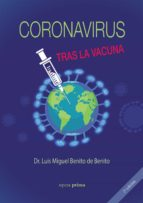

48:24 · 2 OPERE
Le maschere, il dr Luis de Benito e la gazzetteria triumphans.
Il filo del discorso
Due estratti televisivi permettono a Dr Divago di discutere come vengono presentati competenza medica, prove e dissenso durante la pandemia. Nel primo, Carl Heneghan ragiona sulla incertezza degli studi sulle mascherine; nel secondo, Luis de Benito contesta la descrizione della pressione ospedaliera e risponde a domande su casi, vaccini e previsioni per l’autunno. Il relatore interrompe spesso i filmati, traduce alcuni passaggi e interpreta il comportamento dei giornalisti come imposizione di una narrazione. Il nucleo filosofico riguarda la differenza fra avere diritto di parlare e attribuire lo stesso peso conoscitivo a ogni affermazione. La scheda conserva il tema della qualità del confronto, distinguendolo dalla approvazione delle conclusioni mediche. Il titolo professionale non rende infallibile una tesi e la esperienza di un singolo reparto non descrive da sola una intera pandemia. Le note precisano il ruolo di Heneghan e la specializzazione di de Benito, distinguono studi su influenza e COVID-19, rischio relativo e assoluto, positività e malattia. Il confronto con Helicobacter pylori chiarisce inoltre che una classificazione cancerogena non equivale alla probabilità che ogni persona infetta sviluppi un tumore. Restano attribuiti al relatore i giudizi sui moventi dei giornalisti e le accuse di manipolazione.
I libri nel discorso

Coronavirus: tras la vacuna
Copertina: Edizione spagnola 2020, ISBN 9788499467658; il catalogo Casa del Libro indica Edición Personal,18 agosto 2020,244 pagine, mentre il record di un esemplare indica Ópera Prima,242 pagine. La diversa denominazione e paginazione restano dichiarate senza inventare un colophon. Copertina autentica del volume in brossura; distinta dalla edizione con ISBN 9788499467450. Il titolo è del 2020e non indica un resoconto successivo alla campagna vaccinale 2021.
Copertina dell’edizione spagnola, con titolo e nome dell’autore. Identificazione della edizione tramite ISBN, senza asserire la precisa tiratura in possesso del relatore. I due cataloghi differiscono per marchio e paginazione; non una prova della efficacia delle tesi cliniche.
Titolo Coronavirus tras la vacuna esplicito nel clip spagnolo; autore Luis Miguel Benito de Benito verificato da cataloghi e curriculum.
Passaggio 24:56 ↗ · Fonti e libro ↗
Bibbia
Copertina: San Paolo, 2014 · Nuova Versione dai Testi Antichi · edizione di riferimento
Bibbia nominata nel parallelo storico su Galileo e distinzione frateologiaefisica.
Passaggio 39:00 ↗ · Fonti e libro ↗